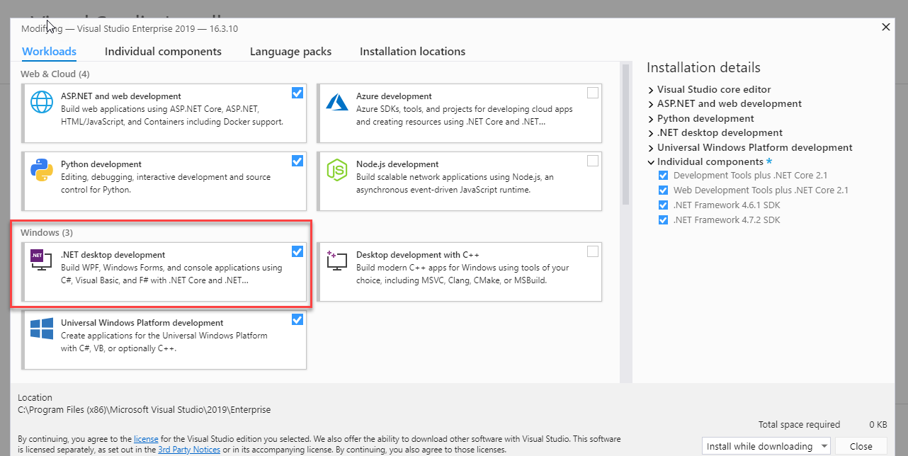

Lesson 1 Intro
Welcome! I'm glad you've decided to join this C# class
Your first task is installing Visual Studio 2017 or 2019 Enterprise. Do not install the Community version. I will not accept projects that are completed using that version.
The process for downloading the free Microsoft software is explained under the Course Introduction module. Please review them.
Here is a link that explains different installations options:
| Follow Microsoft Installation tips |
As explained, you can go back and add other features later on. However, the minimum installation that is needed for this class is :
.NET Desktop Development (marked below). You can also see my other installation selections.

I strongly urge you to start the installation process as soon as possible.
Installation Issues:
If you have issues, you can contact the Azure Site. or
post your concerns to the discussion:
Problems installing Visual Studio
Depending on the speed of your Internet connection,
it can take quite a while to download and install Visual Studio
Learning Outcomes:
Since you already have the software installed, this week should be a lot easier.
Let me start out with a couple of warnings:
- DO NOT USE THE "SAVE AS" FEATURE OF VISUAL STUDIO at least not in this class. It is too hard to use correctly and still submit the required files to me. If you want to copy your work, exit Visual Studio and use Explorer or My Computer to copy the entire folder with your work to another folder. "Save As" does NOT work the way it does in Word or similar programs, due to the number of files involved.
- JUST SAY "NO" to the question "There were build errors. Would you like to continue and run the last successful build?" Many students send me their code and say "I made this change; why doesn't it work?" When I try to compile it, I get that error. I point out that they don't have a clean compile, they say "Oh, I saw that, but didn't think it mattered." It DOES matter. Say "No" and correct your syntax errors before you try to run your code.
At the end of this learning module, you will be able to:
- Install Visual Studio Enterprise
- Design a simple c# application
- Learn about comments and Program Design
- Pack and unpack projects [zip, Unzip(extract)]
- Get familiar with IDE, Naming Conventions ETC.
- Use Visual Studio's formatting tools to create a well designed GUI
- Be familiar with features of Visual Studio and GUI design in C#
- Use Visual Studio to create and run a simple Visual C# project
Learning Activities:
This week you are expected to do the following tasks:
- Install Visual Studio Enterprise
READ YOUR TEXTBOOK
Read Chapter one and two of Starting out with Visual C#
REVIEW MY NOTES
Next, read Notes for Lesson 1 in the Learning Module.
My notes contain information about testing which isn't in the book
It is important to review this information.
The book doesn't introduce TextBoxes until Chapter 3, but I always require tests on Tab Order and Focus.
Textboxes are an easy way to illustrate Tab Order and Focus
so I introduce Textboxes in my notes for this lesson
DO THE QUIZ
You can take the chapter 2 quiz at any time.
WATCH THE VIDEO
It shows you many features of Visual Studio, C#, How to save, and how to zip your programs
DO THE INTRODUCTION
This is very important. You will be dropped if this is not found
LOOK AT THE DEMO
Next, download the demos for the week.
This is an example of a program that uses all of the controls discussed in the chapter.
INDIVIDUAL WORK
All works must be done individually. No team assignment is allowed in this class
DO THE LAB
Finally, you should work on Lab 1. It involves constructing a simple Visual C# project and following. Remember that you need to zip THE ENTIRE FOLDER, NOT A FILE. IF THE PROGRAM CANNOT BE OPENED, YOU WILL NOT GET ANY POINTS FOR IT.
NEVER USE SAVE AS
It is just too tricky to use correctly
I have NEVER had a student use it successfully
Typically, their current work remains on their hard drive
And they send me a really early version of their work.
If you want to copy your work,
exit Visual Studio and do it from My Computer or File Explorer
Oh, did I say this before? Maybe it's important.